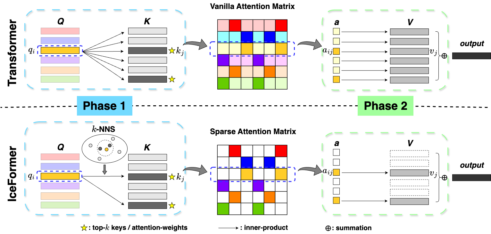
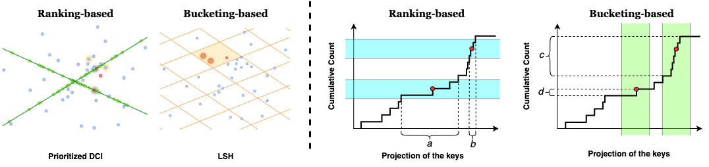
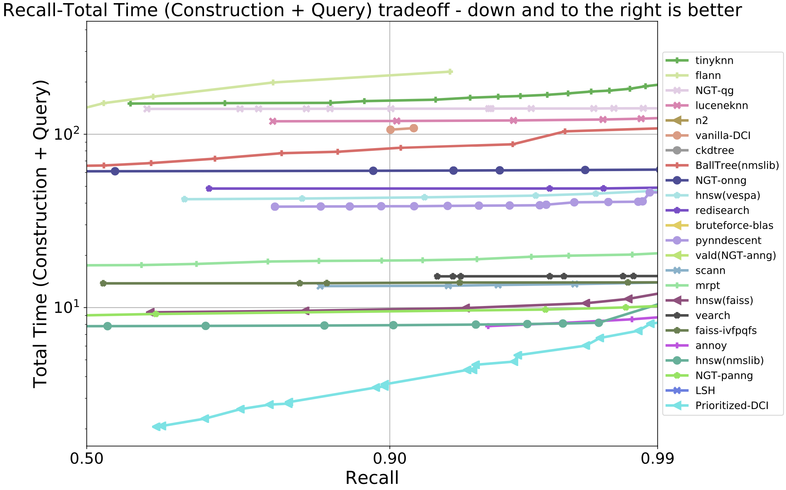
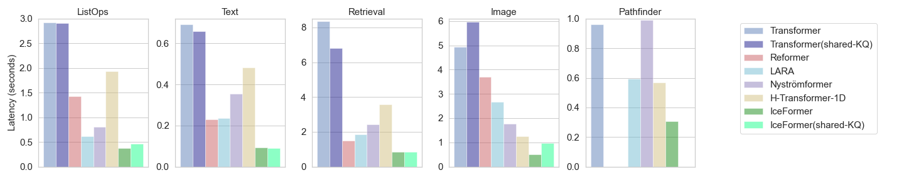
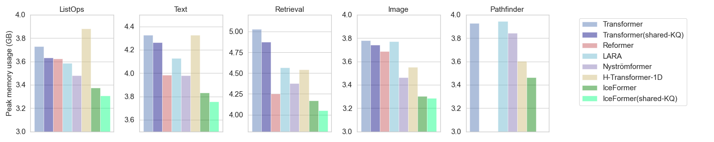
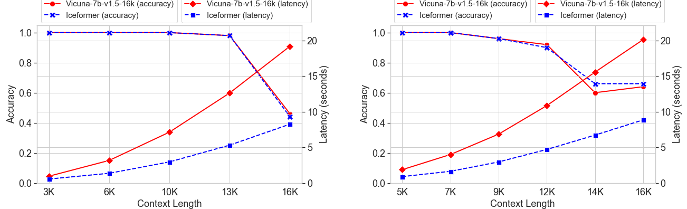
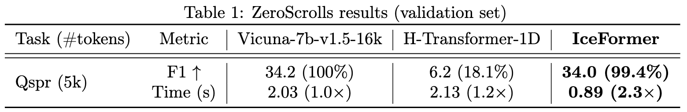

IceFormer
Accelerated Inference with Long-Sequence Transformers on CPUs
Yuzhen Mao
School of Computing Science
Simon Fraser University
Martin Ester
School of Computing Science
Simon Fraser University
Ke Li
School of Computing Science
Simon Fraser University
Contents
Links
Paper

Code
Overview
Below is the overview of the Transformer (top row) and our method, IceFormer (bottom row). We illustrate with one query and k=2 in k-NNS. In the two attention matrices presented, the top-2 largest attention weights in each row are represented by a dark color. The remaining attention weights are shown in a pale color in the vanilla attention matrix, and are set to zero (depicted in white) in the sparse attention matrix.
Ranking-based VS. Bucketing-based k-NNS
We illustrate the difference between ranking-based and bucketing-based k-NNS. As shown in the figure below, bucketing-based places keys into discrete buckets and searches over buckets that contain the query. On the other hand, ranking-based algorithms compares the rankings of different keys relative to the query and searches over highly ranked keys.
We pick an ranking-based k-NNS, Prioritized-DCI, for accelerating attention, because attention weights depend on how different keys compare to one another, rather than an absolute evaluation of each key against a fixed threshold. Therefore, ranking-based algorithms is better aligned with how attention weights are calculated and so can yield better recall of truly important keys.
Benchmarking nearest neighbors
We compare the recall of true nearest neighbors and total construction and querying time of twelve k-NNS algorithms including Prioritized-DCI on fashion-mnist-784 dataset using the ann-benchmarks. As shown in the figure below, Prioritized-DCI can achieve the best recall-latency trade-off across all the tested algorithms, which illustrates its suitability in the setting when the construction and querying time are both important.
Benchmarking LRA
We compare IceFormer on the LRA benchmark with other five baselines, including Transformer, Reformer, Nyströmformer, LARA, and H-Transformer-1D. From the figure below, our proposed IceFormer consistently outperforms all the baselines (up to 2.5× speed-up compared to the second best baselines), offering the least inference time across all five tasks.
We also compare the maximum memory usage for each method during inference. The figure below reveals that IceFormer consistently exhibits the lowest peak memory usage across all tasks. In comparison to the vanilla Transformer, IceFormer achieves memory savings of up to 0.862 GB.
Benchmarking LLM
We utilize IceFormer to accelerate the prompt processing process of Large Lanugauage Models (LLM). We pick Vicuna-7b-v1.5-16k, which is fine-tuned from Llama 2 and supports a context length of up to 16,000 tokens.LongEval
We conduct experiments on the LongEval benchmark to assess the long-range retrieval capability of LLMs across different context lengths. In the figure below, We present the averaged latency of the attention module corresponding to different input prompt length as well as the inference accuracy. From the figure, IceFormer can achieve nearly identical inference accuracy compared with the vanilla Vicuna-7b-v1.5-16k. Furthermore, as the length of the prompt increases, the difference in the latency between IceFormer and the vanilla Transformer becomes larger.
ZeroScrolls
To evaluate IceFormer on more complex academic long-range reasoning tasks, we pick the Qasper question-answering dataset from the ZeroScrolls long sequence benchmark and use its validation set selection and prompts. As shown in the table below, IceFormer achieves 2.3× speed-up compared to standard self-attention while attaining 99.4% of the vanilla unaccelerated model performance at the same time.
Citation
@inproceedings{
mao2024iceformer,
title={IceFormer: Accelerated Inference with Long-Sequence Transformers on {CPU}s},
author={Yuzhen Mao and Martin Ester and Ke Li},
booktitle={The Twelfth International Conference on Learning Representations},
year={2024},
}